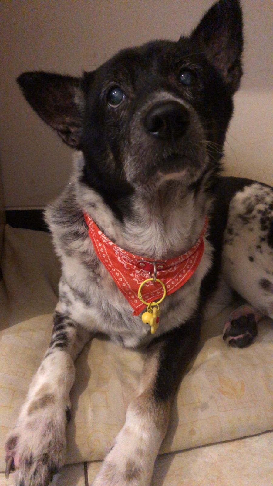
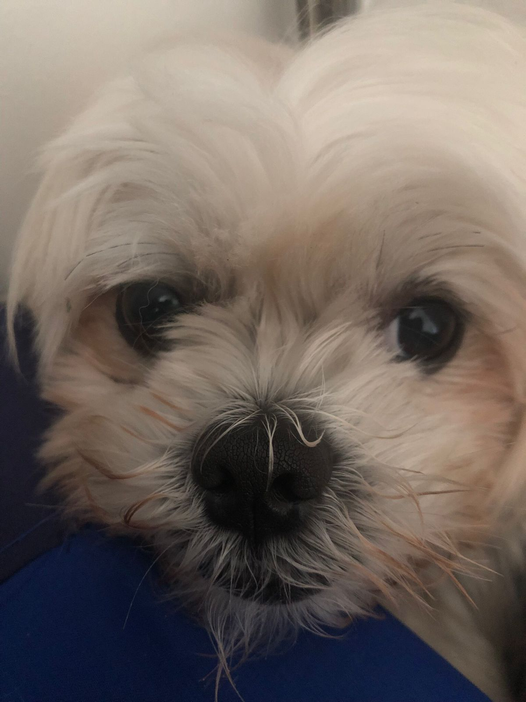

Galeri Foto Anjing


Halo, nama saya Mikael Ardi Andaru. Saya biasa dipanggil Ardi.
Saya merupakan seorang mahasiswa informatika di Universitas Sanata Dharma.
Berikut adalah beberapa informasi tentang saya:
| Nama | Umur | Lahir | Program Studi | Hobi |
|---|---|---|---|---|
| Mikael Ardi Andaru | 20 | Jakarta, 22 April 2006 | Informatika |
|
Saya mempunyai 3 anjing, yaitu Alex, Bobby, dan Cici. Berikut adalah galeri mereka:

